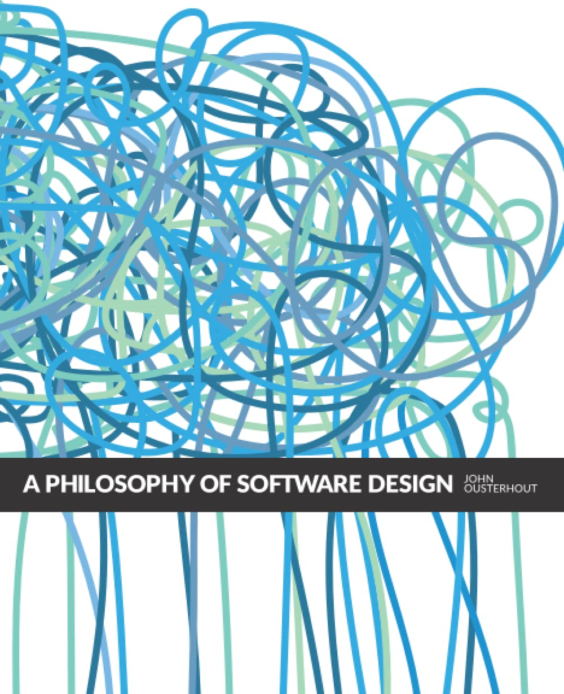

graph LR
A[Good design] -->|enables| B[Reliable AI coding]
B -->|reinforces| A
This is an analysis of the acclaimed book A Philosophy of Software Design (2nd Edition) by John Ousterhout in the context of AI coding. Building on it, I propose a theory of a reinforcing loop for development: design of software using the book’s principles enhances AI coding, and AI coding enhances the design process. Finally, I will share prompts to put it into practice.
As the cover illustrates, the book is about replacing complex spaghetti code with neat, modular code. Work on software projects typically slows down as the project grows and ages. This is doubly true for AI coding, which works impressively on demos and greenfield projects, but is often unusable in mature projects. The book teaches principles of task decomposition that enable packaging complexity in such a way that a project can grow without the slowdown.

Distilled to a maximum, the principles of the book are:
- Unmanaged complexity burdens a project with high cognitive load for developers, slow development, and leads to bugs and performance problems.
- Complexity can be handled by deep modules. A deep module handles a sizeable task, solves it fully and presents a simple interface that hides information irrelevant to the caller.
- Approach software development with an investment mindset, because extra time spent on design, documentation, consistency and clear naming quickly turns into productivity gains.
- Design systems twice before implementing them.
The book was enlightening, as it taught me new concepts and also put concepts I discovered myself through practice into words. The book’s examples are on object-oriented application programming, but the lessons also apply to my areas of machine learning, data engineering and cloud infrastructure.
Reinforcing loop of principled development with AI
John Ousterhout was a recent guest of Gergely Orosz on the Pragmatic Engineer podcast where he commented that software design becomes even more important with AI coding. Let’s dive deeper into this.
It happens in two ways: (1) implementation work can, at least in part, be completed by AI, which means a larger fraction of the remaining work is design; (2) neatly designed software is easier for AI to extend.
In the following, I describe how this becomes a reinforcing loop that strengthens both design and implementation.
Reinforcing loop, part I: Taming the tornado
Ousterhout coined the term tactical tornado, which describes a programmer that adds features quickly, but at the expense of code quality. Most AI coding assistants are tactical tornados. Given too long a lead, they turn a codebase into spaghetti. This is understandable. The AI is thrust into an unfamiliar project, and it has been trained to please its user, which often means achieving whatever is asked. That leads to tacking on the requested feature wherever it fits, rather than stepping back to suggest a redesign that would accommodate the feature more elegantly.
I find it useful to relate to coding agents as a smart, eager new intern. It works best when the project’s architecture is already set up by a senior engineer, and it’s given a well scoped task and all relevant context. Let’s break these requirements down further. Part I focuses on setting conditions where AI can operate safely and effectively.
AI amplifies the design
In chapter 22, the conclusion, Ousterhout writes:
The reward for being a good designer is that you get to spend a larger fraction of your time in the design phase, which is fun. Poor designers spend most of their time chasing bugs in complicated and brittle code.
With AI coding, this could be extended to: The reward for being a good designer is that you can automate more of the coding. Everything that makes working on a project easy or hard for a human developer affects an AI assistant too.
When a coding agent edits a chaotic project it’s likely to add to the chaos. When it edits a neat project that has an obvious place for the new feature, it will maintain that neatness.
Design improves context engineering
Context engineering is an evolution of prompt engineering around the insight:
The real skill isn’t crafting perfect prompts but providing the right context. Think of it as building up a relevant knowledge window for the AI rather than perfecting magical instructions. Most models are good enough now that even imperfect prompts work if the context is right.
Jason Liu on X
For a coding agent, the context needs to show the files to edit, and also communicate the overall design. The design is naturally communicated through the code, with names of files and the comments immediately surrounding them, such as docstrings. In addition, a design document, such as a markdown file, could be included in every request.
The principles laid out in the book reduce the required context to execute a task. A deep, well documented module offers a packaged solution to a problem. It’s not necessary to read the code to use it. So unless the AI is specifically tasked with changing that code, it’s enough to load the function’s name and docstring into the context window.
Senior engineer in the loop
Who benefits most from AI coding? It could be nonprogrammers or beginner programmers, who can perilously skip learning to code. But arguably it is senior engineers who get to scale their design skills and taste.
These tools are most valuable for your most senior engineers, not juniors. Your staff engineers understand the system best but have limited time - AI tools let them implement exploratory features, load testing, and complex integrations they’d otherwise deprioritize.
Jason Liu on X
Despite the marketing, even supposed PhD-level intelligence models make frustrating mistakes all the time. This is where vibe coding hits the wall.
AI demonstrates the sunk-cost fallacy perfectly: Just one more “this doesn’t work!” prompt, you think, and it’ll fix it!! But often it won’t, and now you’ve wasted 30 minutes begging that you could have spent learning how to actually fucking do it yourself.
DHH on X
That’s also why I’m skeptical of one-shot, hands-off tools like Jules and Devin (January 2025 review by Answer.AI). I prefer IDEs and extensions that enable a fast feedback loop between developer and AI.
A developer in the loop can be the bulwark against slop creeping in. Rather than writing the perfect incantation, the developer can stay in the lead and aggressively delegate all rote work.
[…] I find that instead of narrowing in on a perfect one thing my usage is increasingly diversifying across a few workflows […] Personally the bread & butter (~75%?) of my LLM assistance continues to be just (Cursor) tab complete. This is because I find that writing concrete chunks of code/comments myself and in the right part of the code is a high bandwidth way of communicating “task specification” to the LLM, i.e. it’s primarily about task specification bits - it takes too many bits and too much latency to communicate what I want in text, and it’s faster to just demonstrate it in the code and in the right place.
Andrej Karpathy on X
Reinforcing loop, part II: Reinforcing design through consistent practice
So far we’ve seen how good design enables better AI output. But the loop works in reverse too - AI makes it cheaper to maintain good design practices.
On the question of how much to plan in advance (the waterfall approach) versus how much to start and then adjust as you go (agile), Ousterhout opined that a middle way is best. With AI available, I suggest moving more towards agile than before, because writing code has become cheaper.
Ousterhout also advocates an investment mindset, meaning to spend a little more time upfront on design and comments which repays soon in added productivity. AI improves the economics of this:
- The investment has become cheaper and also more valuable, since it benefits AI in addition to human developers. - - Tasks that feel like drudgery, such as updating comments or adding unit tests, can be delegated. Everyone now has infinite interns to pawn off tasks to.
Better adherence to best practices
AI can help with:
- Diagrams. It can generate and evolve diagrams as code with tools like Mermaid and D2, which improves understanding of architecture and can increase creativity. See my article: Diagrams as Code: Supercharged by AI Assistants.
- Naming. It can flag unclear names and suggesting improvements, which makes interfaces easier to use.
- Documentation. It can keep documentation consistent by drafting updates and spotting drift. Together these capabilities tighten the loop between design and implementation.
- Refactoring. It can enable bolder refactoring by freeing developer time, surfacing code smells, suggesting structural improvements, and doing the mechanical edits while tests protect behavior.
From “Design it twice” to “Build it twice”
So far, I’ve treated design as the holy task that only humans can do. That’s not quite true.
Ousterhout advises to “design it twice” before building software, meaning to come up with two separate plans and reason through their pros and cons. But what teaches a developer more than designing something twice? Comparing two actual implementations. With AI, it’s possible to draft a whole implementation quickly. If we view the development of a large system as a minefield of potential roadblocks, we can now probe for little money instead of playing Minesweeper in our heads to detect them in advance. In addition, AI can of course come up with plans of its own and write pro/con lists of different approaches.
However, I still see the design as the foremost responsibility of the human developer.
Wrap up
Takeaways
- Better design improves AI output; AI then accelerates development and enables bolder changes.
- Design first: Deep modules, simple interfaces, and clear names make AI effective.
- Comments-first workflow: Write comments, let AI draft tests, then implement.
- Senior engineer in the loop: Boost human developers rather than attempting to replace them.
Finally, don’t let AI sap the joy out of programming! Keep your coding skills sharp. Turn off tab completion from time to time, especially when you’re working with something new. “A Philosophy of Software Design” does a great job of making principles explicit, but a lot of tacit knowledge and taste remains that needs to be honed by actively coding.
Book to prompt
The book provides handy summaries on the last pages: a list of principles (how to design well) and a list of red flags (to detect bad design and trigger rethinking). I suggest reviewing them, perhaps adding items related to your specific project, and then adding the list into a .cursorrules if you’re using Cursor or the equivalent for other assistants.
Comments first workflow
According to Ousterhout, comments should be the first thing to be written, followed by code and then tests. For an AI-centric workflow, I would modify the order:
Ousterhout is not a proponent of test-driven development (tests before code), because writing tests first leads to tactical programming. However, if code generation is cheaper, it’s emotionally easier to redo the implementation if it turns out to have a design problem. The synergy of the tireless effort of a coding agent and a unit test to hill-climb against is great. As with any workflow, it has to be adapted to reality and remixed on the fly.